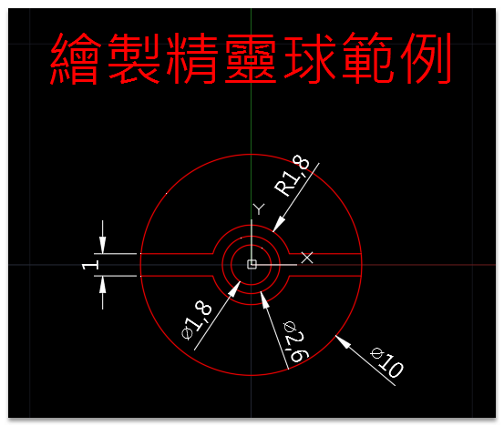

大家好：
有空來完成這個「巨集指令」挑戰，晉升高階繪圖工程師喔～
工具選項板建立巨集指令方式，請參考>>「教學」工具選項板_巨集篇
▼測驗習題1：新建建立「工具指令按鈕」，透過「巨集指令」語法繪製以下圖形。
▼測驗習題2：新建建立「腳本檔」，透過「腳本檔」語法繪製以下圖形。

※範例中有提供解答，有操作疑慮歡迎提出討論※
代碼:
繪製圓
^C^CCIRCLE;0,0;0.9;CIRCLE;@;1.3;CIRCLE;@;1.8;CIRCLE;@;5;
繪製線
^C^CLINE;-7.5,0.5;@15,0;;LINE;-7.5,-0.5;@15,0;;
修剪線
^C^CTRIM;0,5;;-7.5,0.5;-7.5,-0.5;7.5,0.5;7.5,-0.5;;
修剪圓及線
^C^CTRIM;0,1.8;-3,0.5;-3,-0.5;;-1.8,0;1.8,0;0,0.5;0,-0.5;;
轉換成精靈球圖塊
^C^C-BLOCK;精靈球;0,0;5,5;-5,-5;;-INSERT;精靈球;0,0;;;;